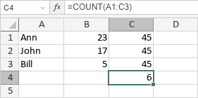

COUNT funkcija
Funkcija COUNT je jedna od statističkih funkcija. Koristi se za brojanje broja izabranih ćelija koje sadrže brojeve, ignorišući prazne ćelije ili one koje sadrže tekst.
Sintaksa
COUNT(value1, [value2], ...)
Funkcija COUNT ima sledeće argumente:
| Argument | Opis |
|---|---|
| value1 | Prva vrednost koju želite da prebrojite. |
| value2/n | Dodatne vrednosti koje želite da prebrojite. |
Napomene
Kako primeniti funkciju COUNT.
Primeri
Slika ispod prikazuje rezultat koji vraća funkcija COUNT.
